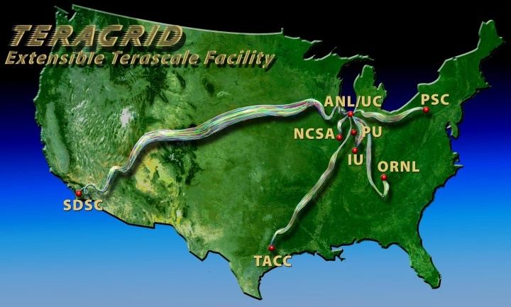
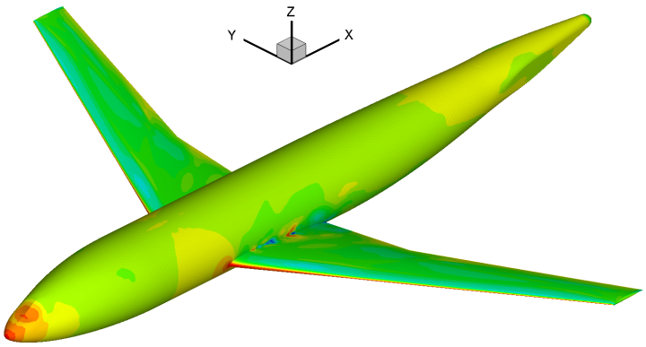
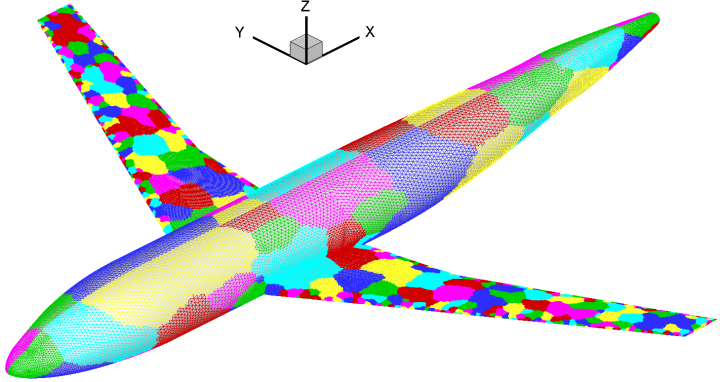
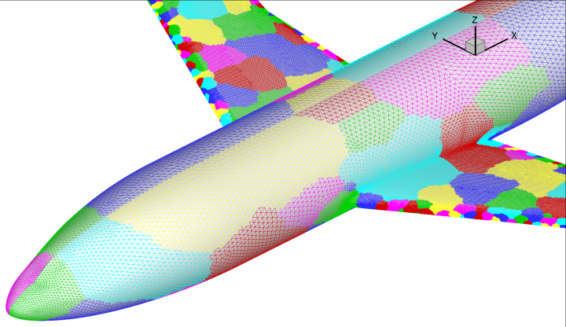
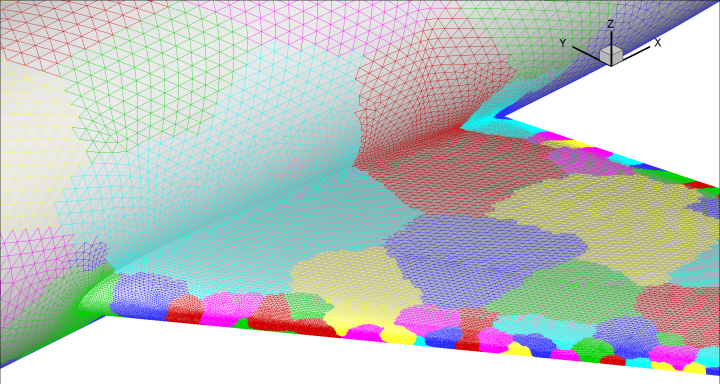
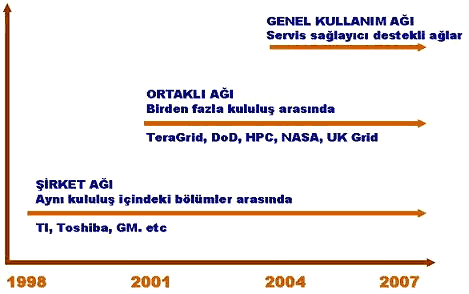

Not: Orijinal olarak TurkCADCAM.net
Dergisi 2. Sayýsý için hazýrlanmýþ bu
makale, ilk kez Nisan 2007'de TurkCADCAM.net Portalý'ndan
yayýnlanmaya baþlamýþtýr.
Grid yada Að'ýn Geliþimi
Bilgisayarýn ilk icadýndan bu yana büyük ölçekli hesaplama ve veri iþlemleri için birçok strateji geliþtirildi. Öncelikle hesaplama hýzý yüksek, hafýzasý ve veri saklama kapasitesi büyük bilgisayar sistemleri ve destek birimleri yükselen deðer olarak algýlandý. Bu sistemler paralel ve vektör iþlemciler ile paylaþýmlý hafýza ve disk sistemlerini içerdiði gibi daðýtýlmýþ hafýza ve veri depolama birimlerini de içermekte idi. Özel amaçlý olarak tasarlandýðý için bakým ve onarým hizmetleri de ilk maliyeti kadar yüksek olabilmekte idi. Firma ve kuruluþlarýn biliþim birimlerinin bir parçasý olan bu sistemler, doðal olarak kuruluþlarýn merkezi kontrol mantýðý çerçevesinde þekillendi ve adeta donaným, yazýlým ve veriler dahil her þey kale surlarý içinde olmalý þeklinde algýlandý.
Kiþisel bilgisayarlarýn ve að yapýlarýnýn yaygýnlaþmasý ile daha ucuz maliyetli toplama/maðazalardan temin edilebilen donaným ve yazýlýmlardan oluþturulabilen küçük ölçekli paralel sistemler de ara çözüm olarak geliþti. Günümüzde yaygýnlaþan çözüm ise daha çok eski stratejiyi, internet teknolojileri, geniþ iletiþim aðlarý, güvenli fakat açýk yazýlým sistemleri ile birleþtiren bir yaklaþým olarak geliþmektedir.
Að için eðer bir benzetme yapmak gerekir ise en doðru olaný elektrik santrallerinin birbirine baðlandýðý "Elektrik Aðý" düþünülebilir. Evimizdeki elektriðin nereden geldiðini bilmemiz gerekmez. Çünkü önemli olan kesintisiz gelmesidir ve düþük maliyettir. Onun Keban barajýndan veya yurt dýþýndan geldiði düþünmeyiz bile. Firmalar, okullar, farklý birimlerden oluþan kuruluþlar kendi içlerinde veya kurumlar arasý bilgisayar ve veri sistemlerini birleþtirilerek, kuruluþun birimleri arasýndaki paylaþýmý artýracaðý gibi iktisat kurallarý gereði üretilen hizmetin maliyetini düþürüp ve kalitesini de yükseltebilirler. Böyle bir sisteme günümüzde genel olarak verilen isim ise 'Grid' veya 'Að' dýr.
Grid veya Að'ýn birleþim noktalarýnda yer alan birimler, mikro-iþlemcilerden veri sistemlerine kadar paylaþýlabilecek her þeyi içerebilmektedir. Örneðin, þehrin farklý noktalarýna yerleþtirilmiþ video kamera verilerini talep eden güvenlik birimlerine ulaþtýran sistemler, evlerimizdeki kiþisel bilgisayarlarý kullanýlmadýðý zamanlarda dünyanýn bir diðer þehrinde yaþayan kiþi/kuruluþ tarafýndan kullanýlmasýna imkan saðlayan sistemler, þirketlerin farklý þehirlerdeki birimleri arasý veri paylaþýmýný saðlayan sistemler "Að" uygulamasý içine giren sistemlerdir.
Að (Grid) Sistemleri
Son birkaç yýl içerisinde hýzlý bir geliþim seyreden Að yapýlanmasýna farklý ülkelerden ve kýtalardan pek çok örnek verilebilir. Aþaðýdaki þekilde, Amerika'daki mevcut hesaplama aðlarýndan büyük bilimsel ölçeklerdeki araþtýrmalar için kullanýlan ve bütün araþtýrmacýlarýna açýk olan TeraGrid (www.teragrid.org) verilmiþtir. TeraGrid, 8 ayrý bilgisayar merkezin birleþtirilmesi ile oluþturulmuþ olup, toplam hesaplama gücü olarak 20 TeraFlop'ýn üzerinde bir hýz vermektedir. Bu rakam artmaktadýr (1 TeraFlop saniyede 1 trilyon aritmetik iþlem hýzý demektir). Pratik bir karþýlaþtýrma olmasý amacýyla diyebiliriz ki yaklaþýk olarak 8 bin masa üstü bilgisayarýn birleþtirilmiþ gücüne eþdeðerdir. Bu hýz ile dünyanýn en hýzlý müstakil olarak kullanýlan süper bilgisayarý ile yarýþabilmektedir (www.top500.org). En hýzlý paralel bilgisayar sistemi ise IBM BlueGene/L 280TeraFlop gücünde ve 131,000 mikro-iþlemciye sahiptir). Bu rakamlar bir yýl içinde sürekli artmaktadýr.

Amerika'daki akademik amaçlý hesaplama aðlarýndan biri olan TeraGrid
Aþaðýda bazý að sistemlerinin ayrýntýlarý verilmiþtir:
Ýsmi |
Web adresi ve
destekçi kuruluþ |
Kuruluþ amacý |
Access Grid |
www.accessgrid.org
DOE, NSF |
Maðazalardan temin edilecek ürünler ile ortaklaþa kullanýlabilecek sistemlerin oluþturulmasý. |
BlueGrid |
IBM |
IBM laboratuvarlarýný birbirine baðlayan test sistemi |
DISCOM |
www.cs.sandia.gov/discom
DOE Defense Programs |
ABD nin 3 silah araþtýrma laboratuvarýný birbirine baðlayan Grid. |
DOE Science Grid |
www.sciencegrid.org
www.doesciencegrid.org
DOE Office of Science |
ABD enerji bakanlýðý laboratuvarlarý ve ortaklýðý olan üniversiteler arasýnda kurulu Að. |
Earth System Grid (ESG) |
www.earthsystemgrid.org
DOE Office of Science |
Atmosfer ve hava tahmin analizleri için oluþturulmuþ bir Að. |
UK Grid Support Center |
www.grid-support.ac.uk
U.K. eScience |
Ýngilteredeki Að destek merkezi |
European Union (EU) DataGrid |
http://eu-datagrid.web.cern.ch
European Union |
Avrupada enerji fiziði, çevre bilimi ve biobiliþim için oluþturulmuþ Að. |
Að üzerindeki uygulamalardan bir örnek
TeraGrid Aðý ortamýnda büyük ölçekli sayýsal iþlem gerektiren problemleri çözebilmek mümkündür. Bunun için Amerika'da yaþayan ve akademik araþtýrmalar yapan kiþiler olmak gerekmektedir. Kullanýcýya mikro iþlemci-CPU kullaným saati türünden bir kaynak verilmektedir. Kullanýcý programýný çalýþtýrdýkça ücreti iþlemci kulaným zamaný türünden kendisinden tahsis edilmektedir. Destekleyici kuruluþ olan Milli Bilim Vakfý (National Science Foundation, Türkiye'de TÜBÝTAK'ýn karþýlýðý) için önemli olan süper hesaplama kaynaklarýnýn kullanýmýnýn yaygýnlaþmasý ve TeraFlops ölçekli hesaplama gücü ile bilimsel keþiflerin yapýlabilmesine ortam hazýrlayabilmektir. Bu sayede küresel düzeyde atmosfer içi hava ve gaz akýþlarýnýn daha küçük çözünürlülük kullanýlarak modellenmesi, nano-ölçekli problemlerin moleküler düzeyde simülasyonu, hava ve uzay araçlarýnýn yapýsal, akýþ, kimyasal, ve kontrol sistemleriyle beraber gerçek zamanlý simülasyonlarý mümkün olabilmektedir.
Aþaðýdaki þekilde TeraGrid ortamýnda yapýlmýþ bir akýþ analizi verilmiþtir. DLRF6 isimli deneysel verileri olan bir uçak etrafýndaki akýþ modellemesi yapýlmýþtýr. Bu problem daha önce bahsedilen TeraGrid þebekesinin bir parçasý olan NCSA'in IA-64 Linux sisteminde çözülmüþtür. Bu sistem, 1.3Gz ve 1.5GHz hýzlý 887 adet çift-iþlemcili Intel-Itanium mikro-iþlemciye sahiptir. Maksimum hesap hýzý ise 6 TeraFlops civarýndadýr. Ýþlemciler arasý þebeke ise Gigabit hýzýndadýr. Bu problem 18 milyon adet tetrahedral geometrili (4 yüzlü) çözüm aðý içermektedir. Çözüm aðý 512 parçaya bölünmüþ ve her bir parça bir iþlemcide çözülerek toplam 512 mikro-iþlemciye daðýtýlmýþtýr.
Kullanýlan sayýsal akýþkanlar dinamiði programý ise ODTÜ/Ankara ve Purdue/Indiana üniversitelerinin araþtýrma laboratuarlarýnda doktora tezi çerçevesinde geliþtirilmiþ olan PACER3D akýþ analiz programýdýr [Ref 1]. Bu program araþtýrma amaçlý olmak üzere isteyenlere verilebilmektedir. Toplam hesaplama 512 iþlemci üzerinde 36 dakika sürmüþtür. Eðer bir iþlemci kullanýlmýþ olsa idi çözüm süresi yaklaþýk olarak 11 gün olacaktý. Parallel hesaplama verimliliði ise %88 olarak tespit edilmiþtir.

DLRF6 uçak akýþ analizi

DLRF6 uçaðý 512 parçalý çözüm aðý

DLRF6 uçaðý gövde civarýndaki çözüm aðý

DLRF6 uçaðý kanat gövde birleþiminde çözüm aðý
Ýþ dünyasý gözüyle Að'a bakýþ
Ýþ dünyasý Að teknolojisine, eðer varsa, Biliþim Birimleri aracýlýðý ile bakmaktadýrlar. Dolayýsý ile Að teknolojisinin bir kuruluþa giriþ noktasýný bu birimler oluþturmaktadýr. Temel itici güç firmalarýn maliyeti düþürmek ve verimliliði artýrma stratejileridir. Bunun içinde Biliþim yöneticilerinin bu konuda bilgilendirilmeleri bu teknolojinin iþ dünyasýna kazanýmýný hýzlandýracaktýr. Bunun için günümüz Að teknolojisi kullanýmýnýn sanayi ve topluma yayýlmasý (diffusion) aþaðýdaki þekilde deðerlendirilebilir:
- Að yapýlanmasýný bir "yenilik" (innovation) olarak kabul edilmektedir.
- Þu anda pek çok birey ve kuruluþ bu yeniliði "yeni benimseyenler" (early adopter) dir. Bunlar çoðunlukla geliþmiþ ülkelerde ve tasarým ve araþtýrma için bilgisayar kullanýmý yoðun olan kuruluþlardýr.
- Pek çok kuruluþ gerek sanayi gerekse araþtýrma kuruluþlarý olsun henüz "farkýnda olma" (awareness) aþamasýndadýrlar.
- Að ile ilgili olarak iletiþim (communication network) genelde profesyonel özel ilgi gruplarý arasýnda olmakla beraber zaman zaman kitle iletiþim (mass media) araçlarýna da yansýmaktadýr. Fakat kuruluþlarýn biliþim yöneticileri Að hakkýndaki haberleri genelde yakýndan takip etmektedirler.
- Að hesaplamasýnýn karmaþýklýðý (complexity) genelde yüksek olarak algýlanmakla beraber karþýlaþtýrýlmalý avantajý da (relative advantage) standartlarý oluþur oluþmaz yatýrým yapýlma ihtimali de yüksek olarak algýlanmaktadýr.
- Bazý kuruluþ ve þirketler Að teknolojisini henüz benimsemiþlerdir (already adopted).
Að teknolojisi ile tanýþtýktan sonra bunun þirket veya kuruluþ için yatýrýma uygun olup olmadýðý çok dikkatli bir þekilde deðerlendirilmelidir. Öncelikle aþaðýdaki konulara dikkat çekmek çok önemlidir:
- Yakýn ve uzun vadeli olarak ihtiyaç duyulan hesaplama gücü ve kapasitesinin deðerlendirilmesi,
- Mevcut sistemde ki kapasite kullanýmý,
- Mevcut sistemin kapasite, verimlilik ve performans yönüyle rakip þirket veya kuruluþlarýn kullandýklarý sistemlerle karþýlaþtýrýlmasý,
- Að sistemine geçiþ ile maliyet azaltýlmasý ne olduðu,
- Að sistemini tamamen kurup iþletmeye baþlayýnca rekabete yönelik avantajýn ne olduðu,
- Aðýn veri iþlemek için mi yoksa hesaplama için mi olacaðý,
- Son olarak, biliþim birimleri arasýnda bu sistem hakkýnda bir anket yapýlýp personel, yapýlanma, ve strateji yönüyle iç direnç olup olmayacaðýnýn belirlenmesi. Eðer kuruluþta yukardan aþaðý katý hiyerarþik bir düzen varsa buna gerek olmayabilir.
Að teknolojisi ve yapýlanmasýnýn dikey ve yatay geliþimini dikkate alýrsak yakýn gelecekte daha da yaygýnlaþacaðýný ve internet üzerinden çok sayýda mikroiþlemcili sistemlerin kullanýmýnýn yaygýnlaþacaðýný söyleyebiliriz. Aþaðýda aðýn geliþim seyri verilmiþtir:

Aðýn zamana göre farklý sýnýflar içindeki yayýlýmý:
Sonuç ve Öneriler
Að teknolojisi ve yapýlanmasý gerek bilimsel gerekse ticari amaçlý olsun Ar-Ge çalýþmalarýnýn olmazsa olmaz bir unsuru olma yolundadýr. 21. yüzyýlýn bilim kaþiflerinin sayýsal modelleme yapmalarý için adeta okyanus araþtýrmacýlarýnýn denizlerin mavi derinliklerine inebilen laboratuar denizaltýlarý gibidir. Eriþilebilir hesaplama gücü ile molekül ve parçacýk düzeyinde sayýsal modellemeler mümkün olabilmektedir. Geliþmiþ ülkelerde bu süreç kararlý bir düzeye gelmek üzere ve her yýl daha da yaygýnlaþmaktadýr.
Ülkemiz açýsýndan henüz yeni bir kavram olan Að teknolojisinin Türkiye'de kurulmasý ve iþler hale getirilmesi kýsa sürede gerçekleþtirilebilir. Bunun için iki ayrý yol takip edilebilir. Birincisi, eðitim kurumlarýna açýk Ar-Ge amaçlý çok-ortaklý bir yatýrým ve yönetim yapýsýna sahip bir merkezin kurulmasý. Buna üniversitelerin önderlik edebileceði gibi TÜBÝTAK çerçevesinde yapýlandýrýlýp yatýrým kaynaðý oluþturulabilir. Diðeri ise sanayi-kamu ortaklý bir yapýlanma ile destekleyenlerine katkýlarý oranýnda mikroiþlemci zamaný tahsis eden bir yapýlanmaya gidilebilir. Örneðin 256 mikroiþlemcili bir sistem kurulup araþtýrma birimlerinin ve firmalarýn bilgisayar destekli tasarýmcýlarýnýn kullanýmýna açýlabilir. Bunun maliyeti 300-600 bin YTL arasýnda deðiþebilir. Bu sistemi paket halinde yurt dýþýndan almak yerine iç piyasa ürünleri kullanarak ta oluþturmak büyük oranda mümkün olabilecektir.
Not: Parantez içinde verilen yabancý kelimeler Ýngilizce olup tercümede muhtemel kayýplarý önlemek için verilmiþtir.
Að ile ilgili bazý kaynaklar:
|